GS Aimé Césaire · Guide utilisateur
Bien utiliser l'outil de gestion scolaire
Inscriptions, fiches élèves, paiements, emplois du temps, notes, bulletins et cours de la semaine : tout est réuni au même endroit, à jour pour toute l'équipe. Ce guide présente chaque écran, profil par profil.
Se connecter
Chaque membre de l'équipe a son propre compte, créé par la direction.
- Ouvrez https://gest-scol.fr dans le navigateur (Chrome, Safari, Edge, Firefox).
- Saisissez votre identifiant et votre mot de passe, puis Se connecter.
- Pour partir, touchez la flèche de déconnexion en bas du menu (sur téléphone : Plus puis Déconnexion).

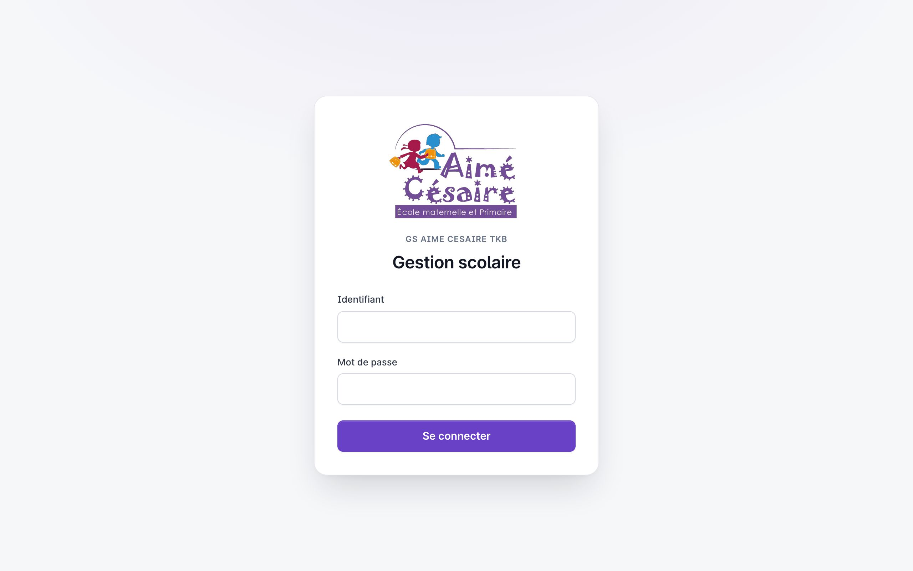
Ne prêtez pas votre identifiant : chaque note et chaque paiement est enregistré au nom de la personne connectée. Sur un ordinateur partagé, déconnectez-vous en partant.
Demandez à la direction : elle vous en donne un nouveau depuis l'écran Utilisateurs.
Qui peut faire quoi
Le rôle du compte décide des menus visibles et de ce qu'on peut modifier.
| Écran | Direction | Secrétariat | Enseignant |
|---|---|---|---|
| Tableau de bord | Complet | Oui | Le sien |
| Élèves : consulter les fiches | Oui | Oui | Oui |
| Élèves : inscrire, modifier, transférer, archiver | Oui | Oui | — |
| Paiements : enregistrer, imprimer un reçu | Oui | Oui | — |
| Situation financière, retards, taux de recouvrement | Oui | — | — |
| Emploi du temps : modifier | Oui | Oui | Sa classe (instructeur principal) |
| Notes : saisir et corriger | Oui | Oui | Ses matières (toute sa classe en maternelle et primaire) |
| Bulletins et certificats de scolarité | Oui | Oui | — |
| Ressources : consulter | Oui | Oui | Oui |
| Ressources : ajouter des documents | Oui | — | — |
| Classes, Matières, Import / Export | Oui | Oui | — |
| Utilisateurs, Nouvelle rentrée, Sauvegarde, périodes | Oui | — | — |
Dans ce guide, chaque partie rappelle les profils concernés : Direction Secrétariat Enseignant.
Se repérer dans l'outil
Un menu à gauche, l'écran au centre, l'aide toujours à portée de main.
- Le menu de gauche est rangé en trois groupes : Au quotidien (Élèves, Emploi du temps, Notes, Ressources), Paramétrage (Classes, Matières, Utilisateurs, Rentrée) et Données (Import / Export, Sauvegarde). Chacun ne voit que les menus utiles à son rôle.
- En haut à droite, l'année scolaire en cours (pastille verte).
- Le bouton ? explique l'écran ouvert en quelques étapes. L'interrupteur Aide à côté affiche cette explication automatiquement à chaque nouvel écran : pratique les premiers jours, à couper ensuite.
- Les confirmations (« Paiement enregistré », « Notes enregistrées »…) apparaissent dans une pastille en bas de l'écran puis disparaissent seules.
- Les documents (PDF, guide) s'ouvrent dans un nouvel onglet : l'outil reste ouvert derrière.

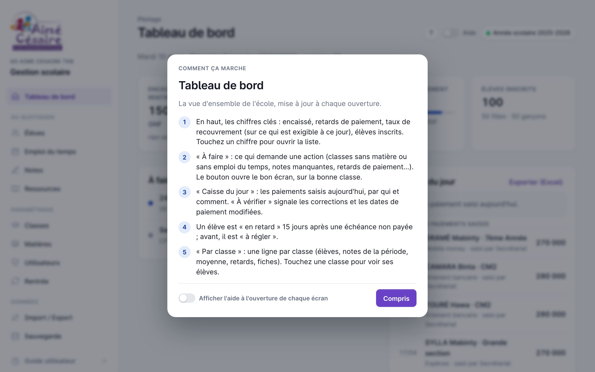
Tableau de bord
Le premier écran après la connexion : l'essentiel de la journée.
Direction
- Les chiffres clés : encaissé depuis la rentrée, retards de paiement, taux de recouvrement (calculé sur ce qui est dû à ce jour) et élèves inscrits. Touchez un chiffre pour ouvrir la liste correspondante.
- À faire : ce qui demande une action (retards de paiement, notes manquantes, classe sans emploi du temps, documents de la semaine manquants…). Le bouton de chaque ligne ouvre le bon écran, sur la bonne classe.
- Caisse du jour : les paiements saisis aujourd'hui, par qui et comment, avec l'export Excel. « À vérifier » signale une correction ou une date de paiement modifiée.
- Par classe : une ligne par classe avec l'instructeur principal, les élèves, l'avancement des notes de la période, la moyenne, les élèves sous la moyenne, les retards et les fiches à compléter. Touchez une classe pour voir ses élèves.
- En bas de page : la date de la dernière sauvegarde.

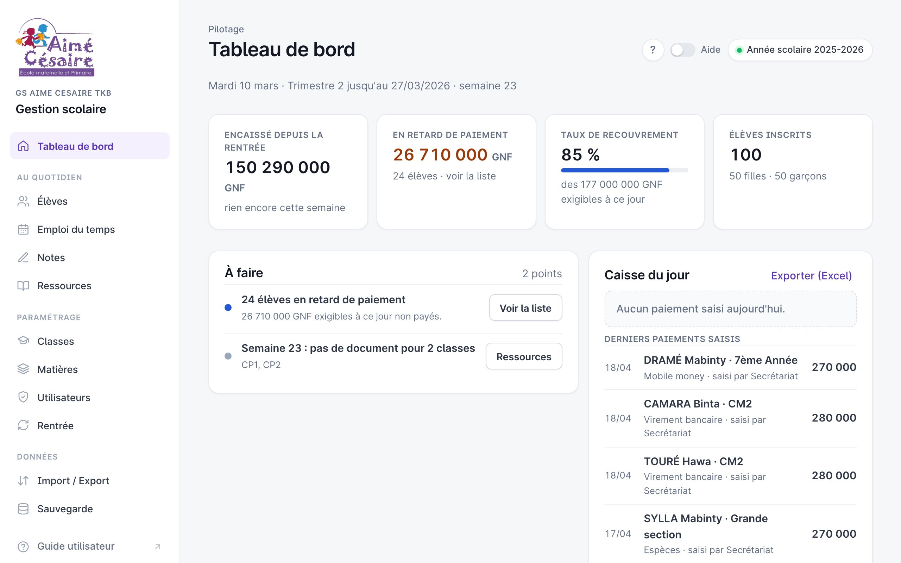

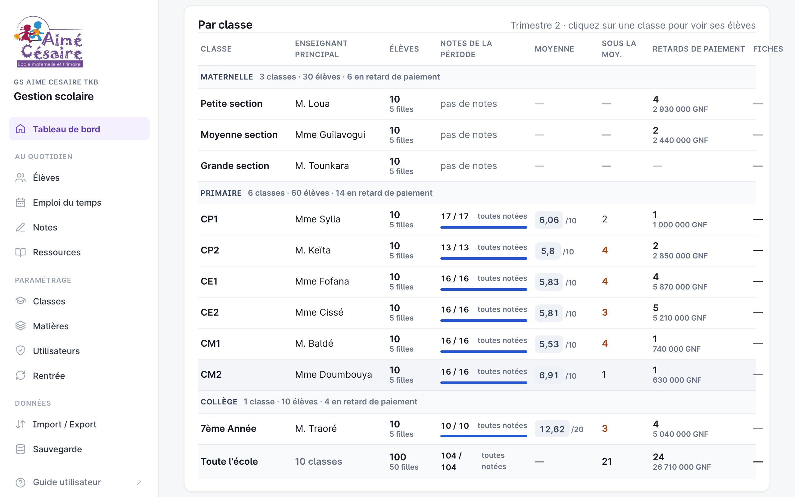
Une échéance non payée est « à régler » pendant 15 jours, puis passe « en retard ». Pour un élève inscrit en cours d'année, le délai part de sa date d'inscription.
Secrétariat
Mêmes blocs, sans les montants : élèves inscrits, fiches à compléter, notes de la période, « À faire » et « Par classe ».
Enseignant
- Aujourd'hui : vos cours du jour (ou du prochain jour de cours), avec le cours en cours mis en avant.
- À faire : les notes à saisir ou à compléter dans vos matières, la composition avant la fin du trimestre.
- Mes classes : la moyenne de la période dans vos matières et le nombre d'élèves en difficulté.
- Ressources de la semaine : les cours de la semaine pour vos classes, à ouvrir d'un geste.

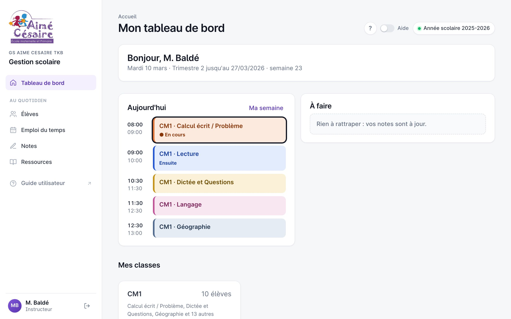
Élèves et fiche élève
La liste de tous les élèves et, pour chacun, une fiche complète.
Trouver un élève
- Tapez un nom, un prénom, un matricule ou une classe dans la recherche : la liste se met à jour à chaque lettre.
- Affinez avec les filtres : classe, situation de paiement (direction), complétude de la fiche, élèves actifs, anciens ou archivés.
- Touchez la ligne d'un élève pour ouvrir sa fiche.

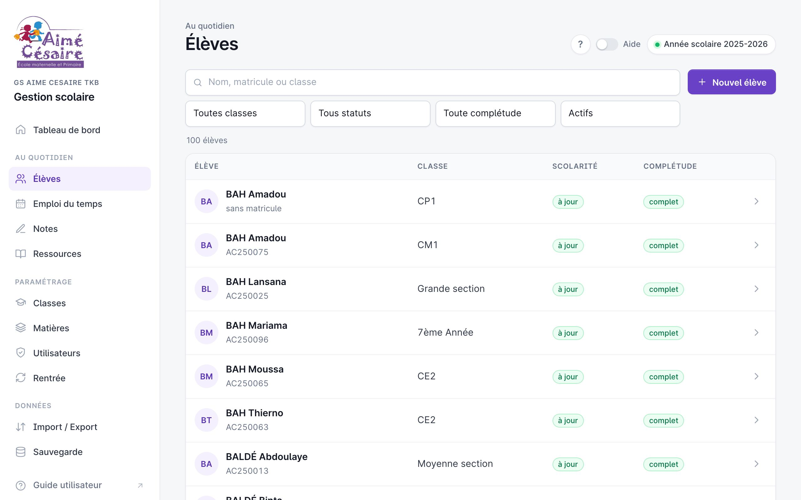
Inscrire un élève Direction Secrétariat
- Touchez + Nouvel élève.
- Remplissez les blocs Identité, Famille et contacts, Scolarité (la classe), puis Enregistrer.
- Une fiche incomplète affiche « Fiche à compléter » avec la liste de ce qui manque : touchez Compléter la fiche quand vous avez les informations.
Pour inscrire beaucoup d'élèves d'un coup, utilisez l'import Excel.
La fiche élève
En haut, l'élève (classe, matricule, âge, parent et téléphone à toucher pour appeler) et les actions :
- Imprimer la fiche : la fiche sur papier.
- Certificat de scolarité : le certificat de l'école, sur une page A4, prêt à signer.
- Choix de la période puis Bulletin : le bulletin de l'élève pour ce trimestre ou ce semestre.
- Transférer : changer l'élève de classe.
Puis les onglets :
- Identité : la fiche en lecture, rangée en blocs (Identité, Famille et contacts, Scolarité, Notes internes).
- Notes : moyenne générale, rang dans la classe, moyennes par matière comparées à la classe, pour chaque période (pas en maternelle).
- Finances (direction) ou Paiements (secrétariat) : voir Paiements.
- Suivi : commentaires internes sur l'élève (comportement, rendez-vous avec les parents…). Les enseignants peuvent en ajouter.
- Historique : les années passées de l'élève.

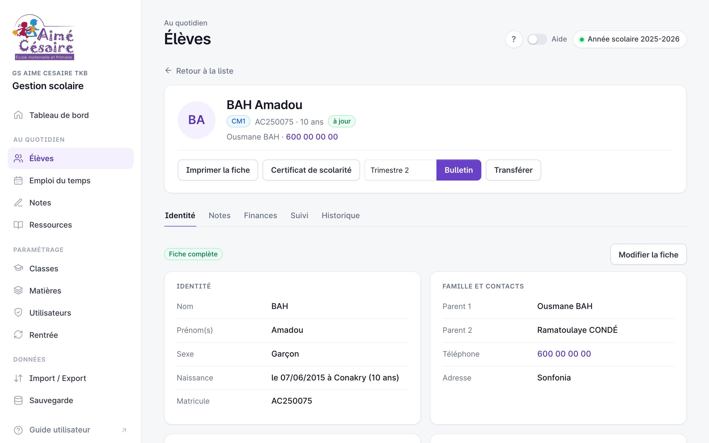

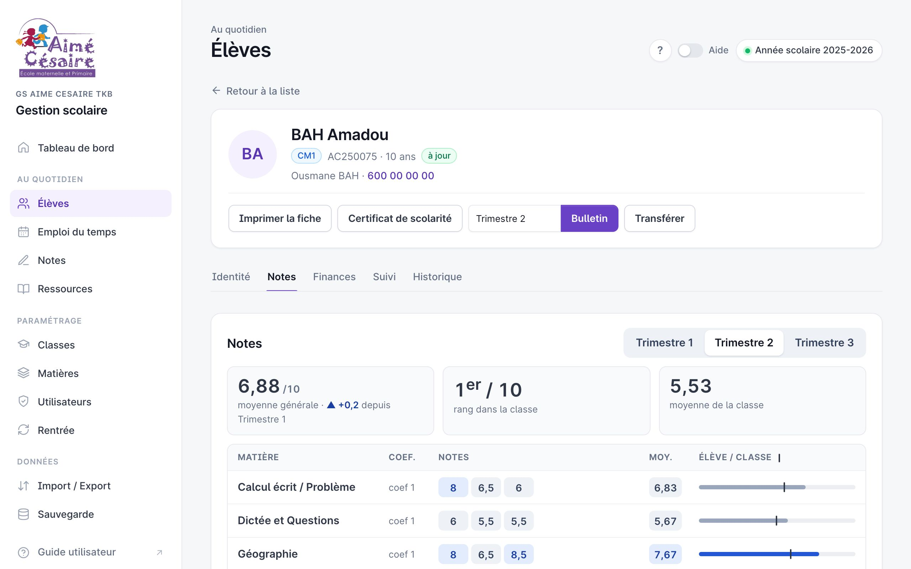
Modifier une fiche Direction Secrétariat
- Dans l'onglet Identité, touchez Modifier la fiche.
- Corrigez les champs (les blocs sont les mêmes qu'en lecture), ajoutez une photo si besoin.
- Enregistrer, ou Annuler pour revenir sans rien changer.
Le champ « Appréciation pour le bulletin » est imprimé sur le bulletin. « Archiver l'élève » (en bas, à l'écart) le retire des listes actives sans rien effacer.

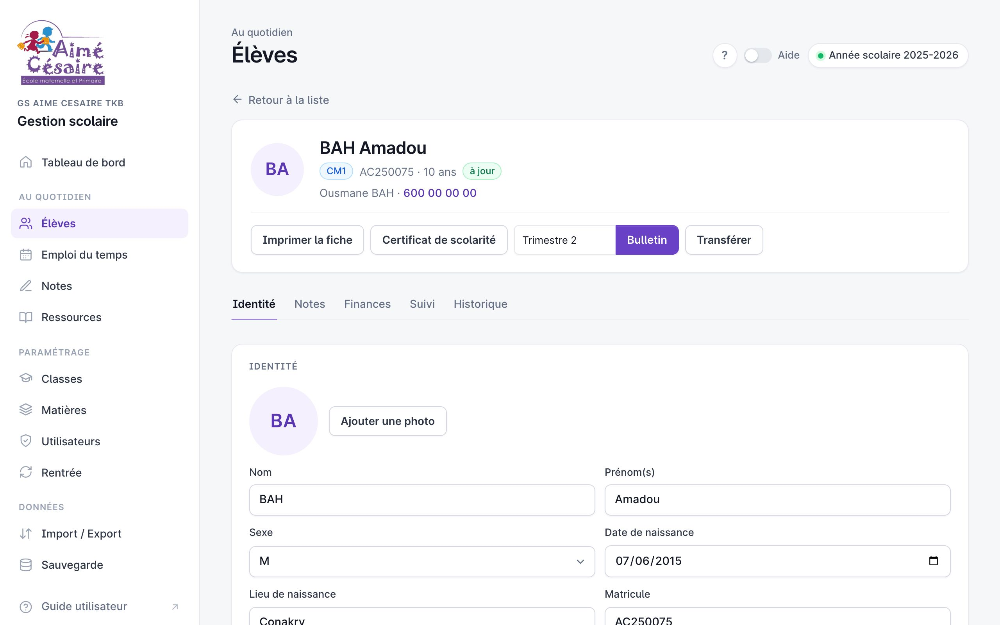
Paiements
Inscription et scolarité, tranche par tranche, avec reçu imprimable.
- Ouvrez la fiche de l'élève, onglet Finances (direction) ou Paiements (secrétariat).
- Touchez + Ajouter un paiement : montant, date, mode (espèces, mobile money, virement bancaire, chèque, autre), puis enregistrez.
- Touchez Reçu sur la ligne du paiement pour imprimer le reçu à remettre à la famille.
La direction voit en plus la situation financière : ce qui est dû (inscription et scolarité selon la classe), ce qui est exigible à ce jour, ce qui est payé, le solde et le statut « à jour », « à régler » ou « en retard ».

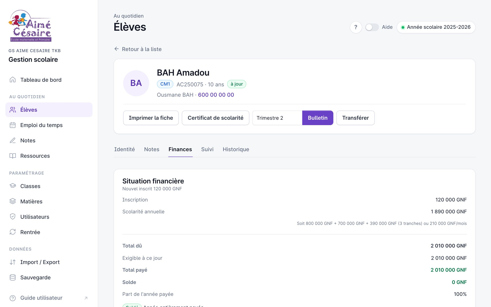
Un paiement daté à partir du 1er août compte pour la nouvelle année scolaire, même avant la « Nouvelle rentrée ». Saisissez toujours la date réelle du paiement.
Emploi du temps
La semaine de chaque classe, et celle de chaque enseignant.
- Par classe : choisissez la classe en haut. Chaque matière a sa couleur ; la récréation est hachurée.
- Par enseignant (direction, secrétariat) ou Mon emploi du temps (enseignant) : toutes les classes d'un enseignant sur la semaine.
- À droite, Heures par matière : ce qui est placé dans la semaine, et le contrôle des conflits.

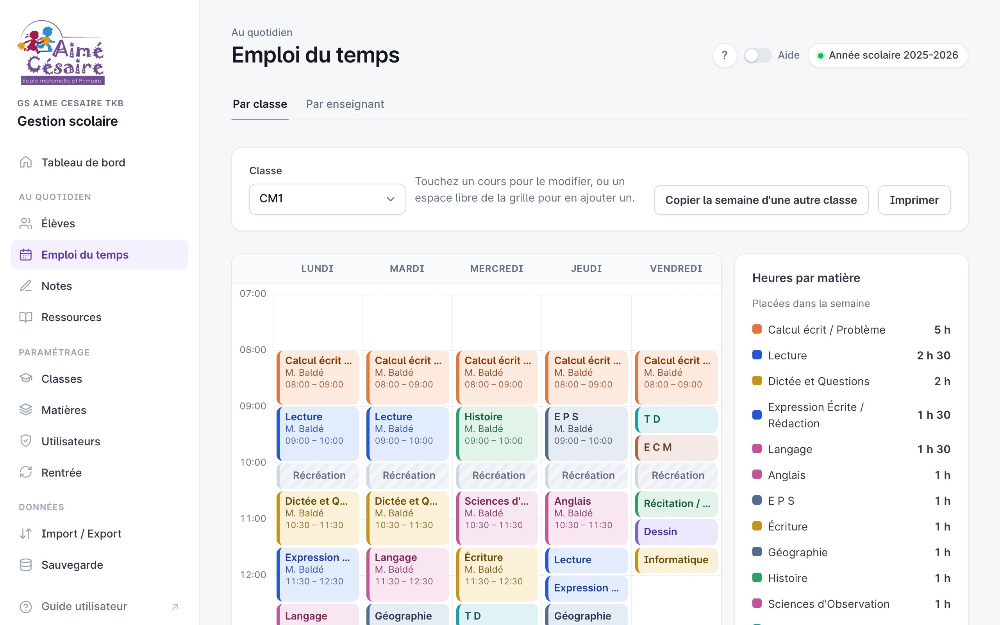
Ajouter ou modifier un cours Direction Secrétariat Instructeur principal
- Touchez un cours pour le modifier, ou un espace libre de la grille pour ajouter un cours à cette heure.
- Réglez le jour, l'heure de début et de fin, la matière (ou « Récréation ») et l'enseignant.
- « Répéter aussi le » place le même cours sur d'autres jours d'un coup.
- Enregistrer : c'est pris en compte tout de suite. Supprimer ce cours pour le retirer.

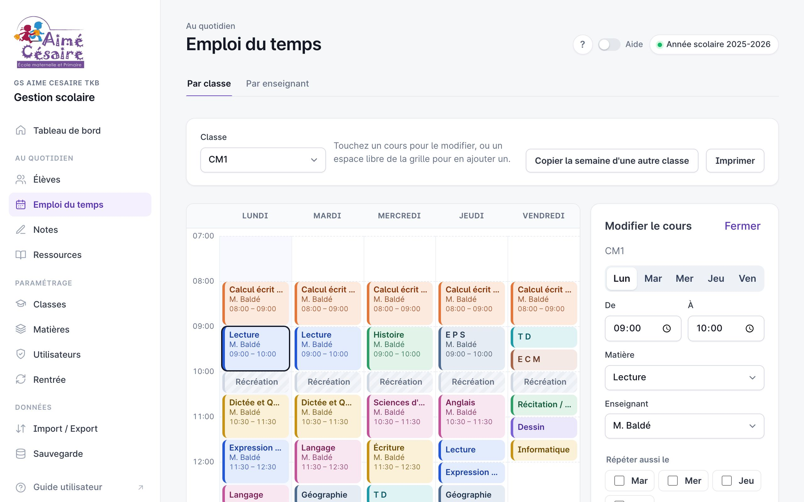
Si l'enseignant a déjà cours ailleurs à cette heure, l'outil le signale et propose les enseignants libres.
Copier la semaine d'une autre classe sert de point de départ pour une classe du même niveau. Imprimer donne la semaine sur une page A4 à afficher.
Notes et bulletins
Saisir les évaluations, suivre les moyennes, imprimer les bulletins.
Choisissez toujours d'abord la classe et la période en haut de l'écran. La maternelle n'a pas de notes.
Saisir une évaluation
- Onglet Saisir une évaluation : choisissez la matière, le type (mensuelle ou composition) et la date. Le barème s'affiche (sur 10 en primaire, sur 20 au collège).
- Tapez la note de chaque élève puis Entrée pour passer au suivant. Une case laissée vide = élève non noté.
- À droite, la moyenne, le minimum et le maximum se calculent au fur et à mesure. Terminez par Enregistrer.

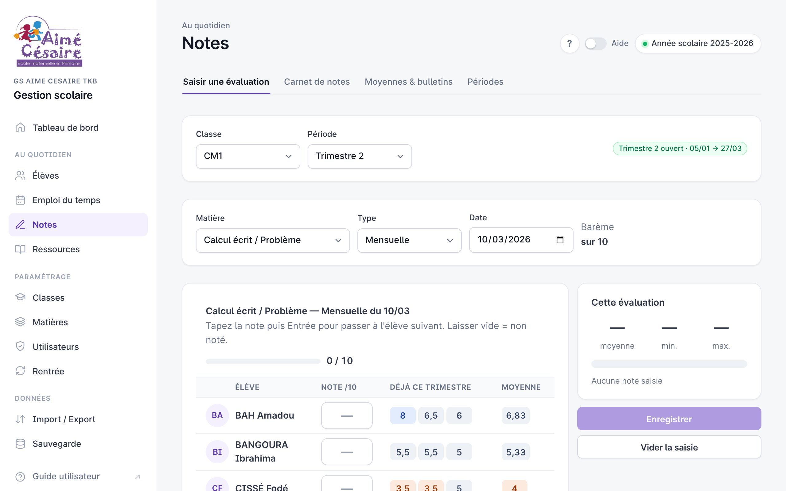
Carnet de notes
Toutes les notes d'une matière pour la période, élève par élève. Touchez une note pour la corriger ou la supprimer.

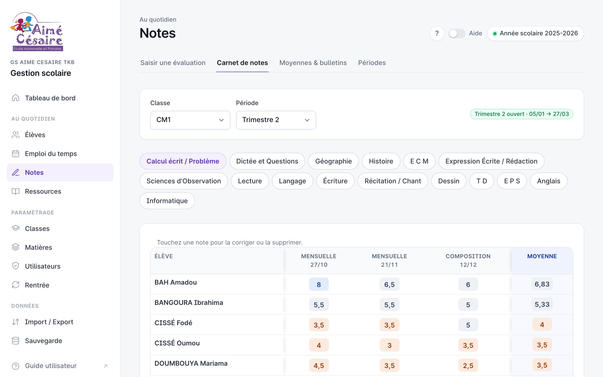
Moyennes et bulletins
- Le classement de la classe avec la moyenne générale et la moyenne de chaque matière (flèches pour faire défiler les matières).
- Imprimer les bulletins : tous les bulletins de la classe d'un coup, un par page A4 Direction Secrétariat
- Exporter (Excel) : le tableau des moyennes.

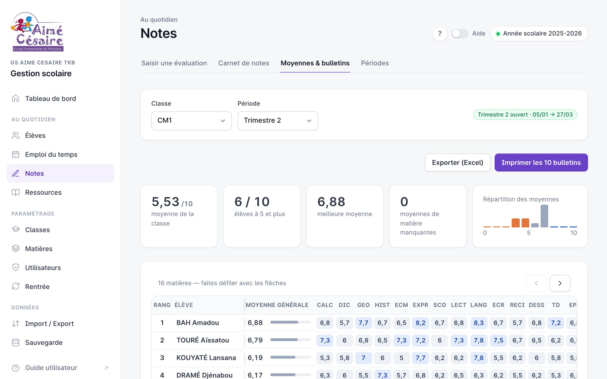
Périodes Direction
Les trimestres (maternelle et primaire) et semestres (collège) avec leurs dates. Fermer une période bloque la saisie une fois les bulletins faits ; Dates pour les ajuster.

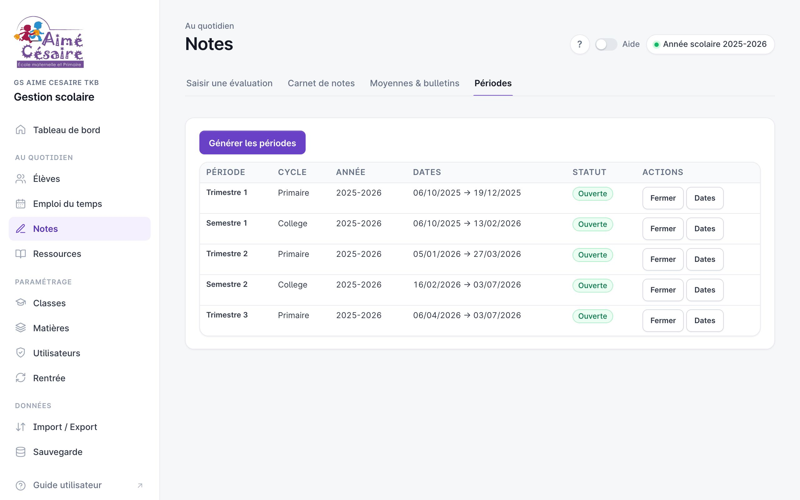
Ressources pédagogiques
Les programmes, cours et corrigés de chaque classe, semaine par semaine.
- Choisissez la classe, puis la matière.
- Cette semaine montre le document de la semaine en cours ; la grille Toutes les semaines ouvre les autres (en violet : la semaine en cours ; en pointillés : pas encore de document).
- Ouvrir affiche le PDF dans un nouvel onglet, prêt à lire ou à imprimer.
Plus bas : le programme de l'année et Divers (documents utiles à toute la classe).

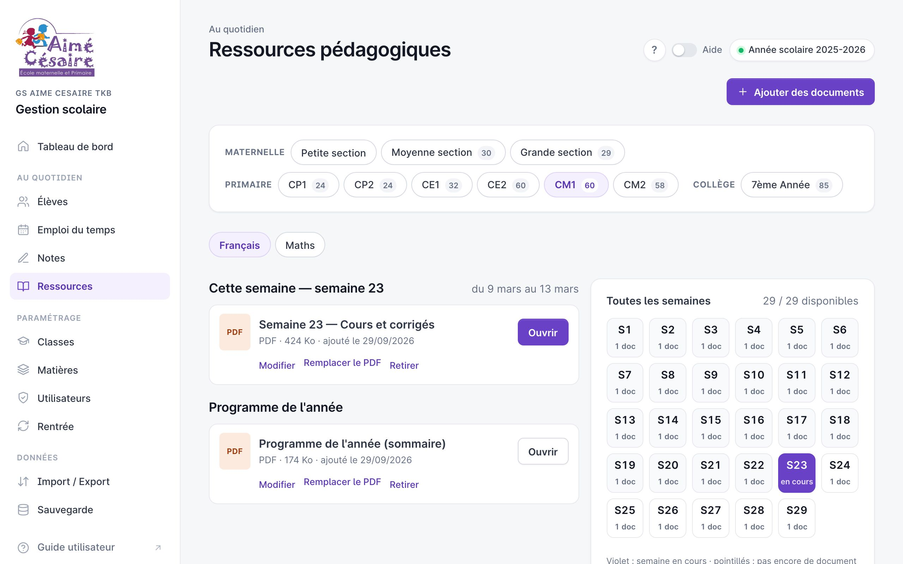
Ajouter des documents Direction
+ Ajouter des documents : cochez les classes concernées, choisissez la matière et les PDF. La semaine est reconnue grâce au mot « Semaine » suivi du numéro dans le nom du fichier (par exemple Francais_Semaine12.pdf). Sur chaque document : Modifier, Remplacer le PDF ou Retirer.
Classes
Les classes de l'école, rangées par cycle.
- L'instructeur principal se choisit directement dans la liste : c'est enregistré tout de suite.
- Touchez le nombre d'élèves, de matières ou d'heures pour ouvrir l'écran concerné sur cette classe. Ce qui manque est signalé en orange.
- + Nouvelle classe : nom et cycle. Modifier : nom, cycle, archivage. Une classe qui a encore des élèves ne peut pas être archivée.

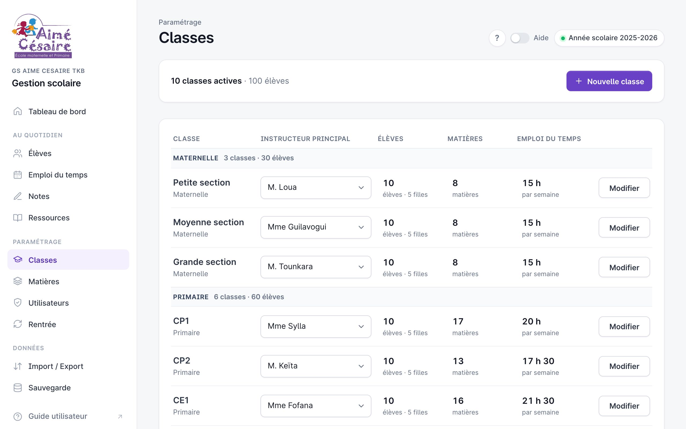
Matières
Les matières de l'école et leur affectation aux classes.
- Référentiel : la liste des matières. + Nouvelle matière pour en créer une, Modifier pour la renommer ou l'archiver.
- Affectations par classe : choisissez la classe, puis changez directement le coefficient, l'enseignant ou les heures par semaine (enregistré aussitôt).
- Une classe en orange n'a aucune matière : cochez-en, ou copiez celles d'une autre classe.
- Une matière qui a déjà des notes ne peut pas être retirée de la classe.

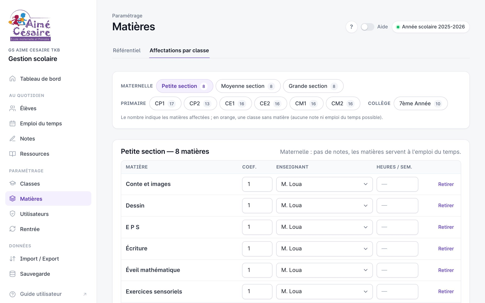
Utilisateurs
Les comptes de connexion de l'équipe, rangés par rôle.
- + Nouvel utilisateur : identifiant (sans espace ni accent, par exemple mdiallo), nom affiché et rôle.
- Un mot de passe provisoire est proposé (8 caractères minimum ; Générer en donne un autre). Notez-le et donnez-le à la personne.
- Créer le compte.
- Mot de passe oublié : Mot de passe sur la ligne de la personne, saisissez le nouveau, enregistrez.
- Départ : Modifier puis « Désactiver le compte » (réactivable plus tard). Votre propre compte ne peut pas être désactivé.
- Pour chaque enseignant, l'écran rappelle ce qu'il fait (instructeur principal de…, matières, heures) et sa dernière connexion.

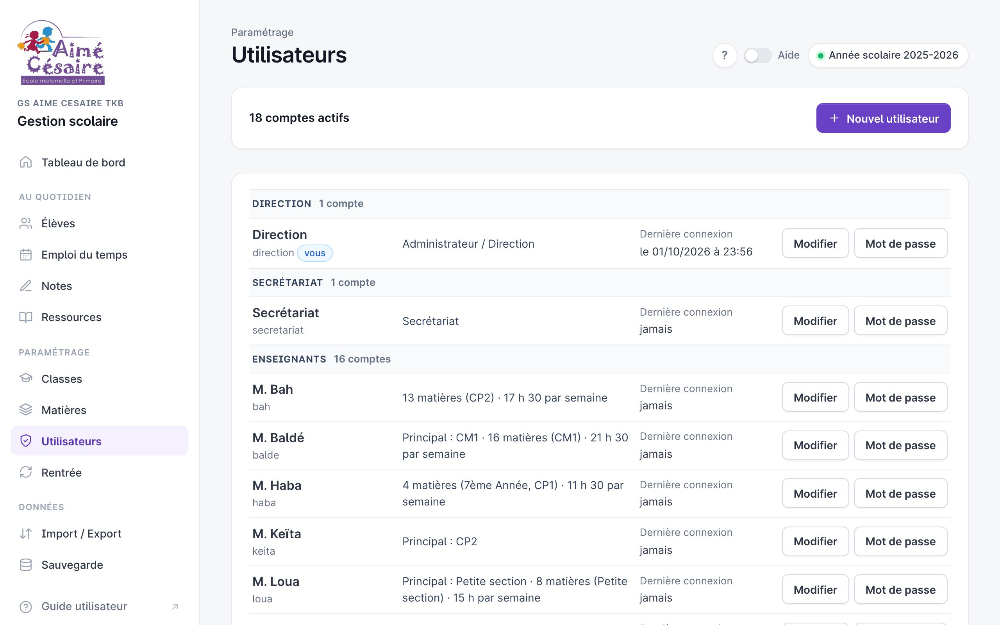
Nouvelle rentrée
Une seule fois par an, juste avant la rentrée : chaque élève passe dans sa nouvelle classe.
- Créez d'abord les nouvelles classes éventuelles (menu Classes).
- Vérifiez la Séquence des classes : pour chaque classe, la colonne « Passe en » doit indiquer la bonne classe suivante.
- Aperçu de la rentrée : vérifiez élève par élève et changez les redoublants ou les départs.
- Exécuter : une sauvegarde est faite automatiquement avant ; l'année précédente passe en lecture seule.
- Ensuite : affectez les matières aux nouvelles classes et vérifiez les périodes et leurs dates.

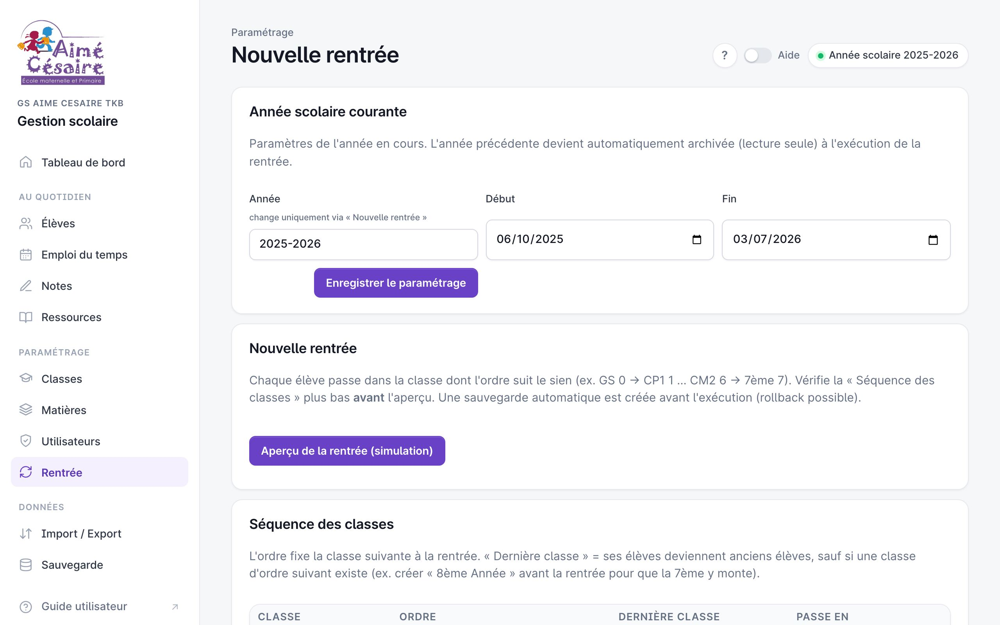
Import / Export
Échanger des listes avec Excel.
Importer des élèves
- Choisissez la classe cible si le fichier n'a pas de colonne « classe », puis le fichier Excel.
- Analyser avant import : l'outil montre ce qui sera créé et signale les lignes à vérifier.
- Confirmez l'import une fois les lignes vérifiées.
Exporter
Élèves actifs, données à compléter, retards de paiement, effectifs par classe, paiements : chaque bouton télécharge un fichier Excel.

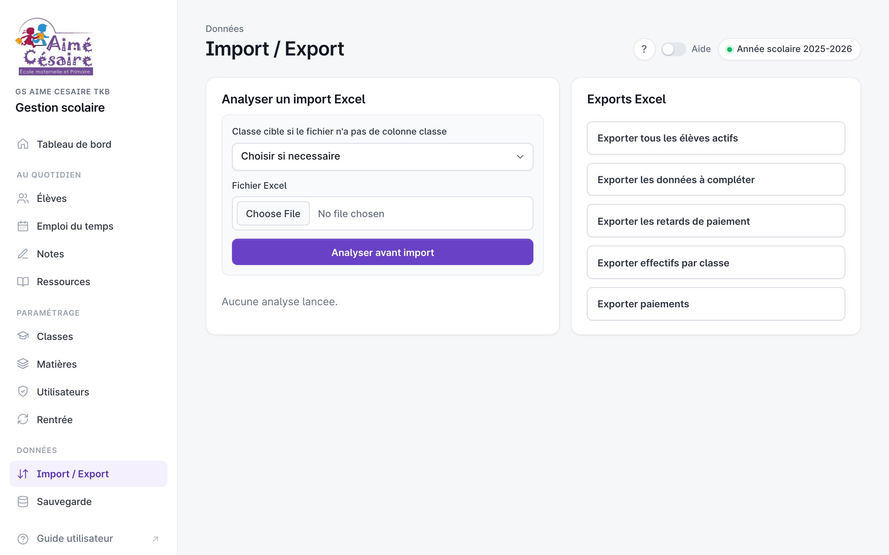
Sauvegarde
Une copie de sécurité de toutes les données.
- Le serveur sauvegarde automatiquement chaque nuit les données et les documents pédagogiques ; l'outil fait en plus sa propre copie chaque jour. La date de la dernière sauvegarde est rappelée en bas du tableau de bord.
- Avant une opération importante (gros import, nouvelle rentrée), touchez Créer une sauvegarde.

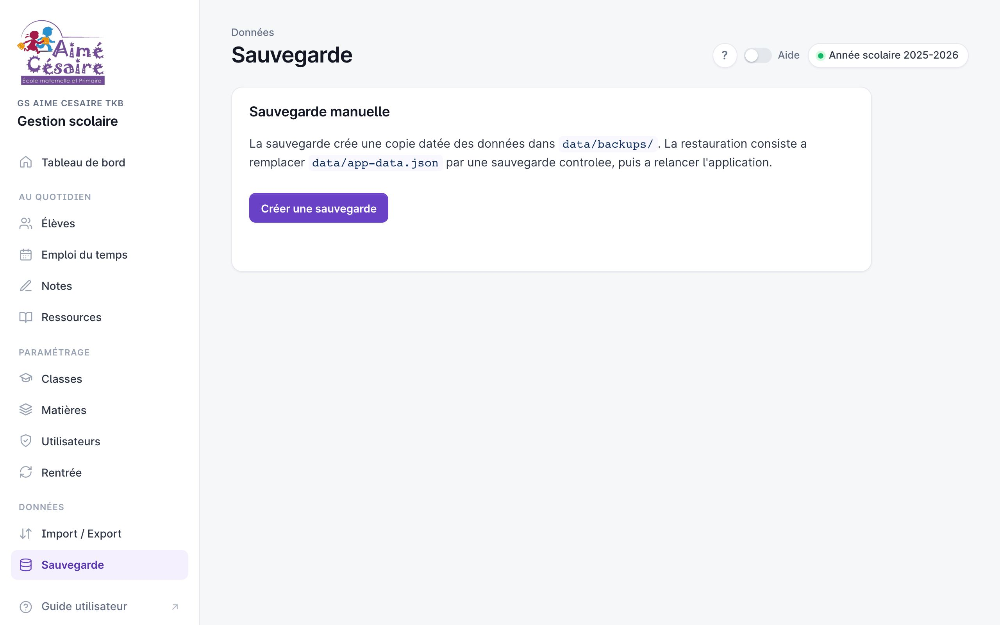
Sur téléphone
Le même outil, adapté au pouce.
- En bas, la barre Accueil · Élèves · EDT · Notes · Plus donne accès aux écrans du quotidien ; Plus (ou Menu en haut) ouvre le menu complet.
- L'emploi du temps s'affiche un jour à la fois : touchez Lun, Mar, Mer… pour changer de jour.
- Astuce : ajoutez l'outil à l'écran d'accueil (Safari : bouton Partager puis « Sur l'écran d'accueil » ; Chrome : menu ⋮ puis « Ajouter à l'écran d'accueil »). Il s'ouvre alors comme une application.

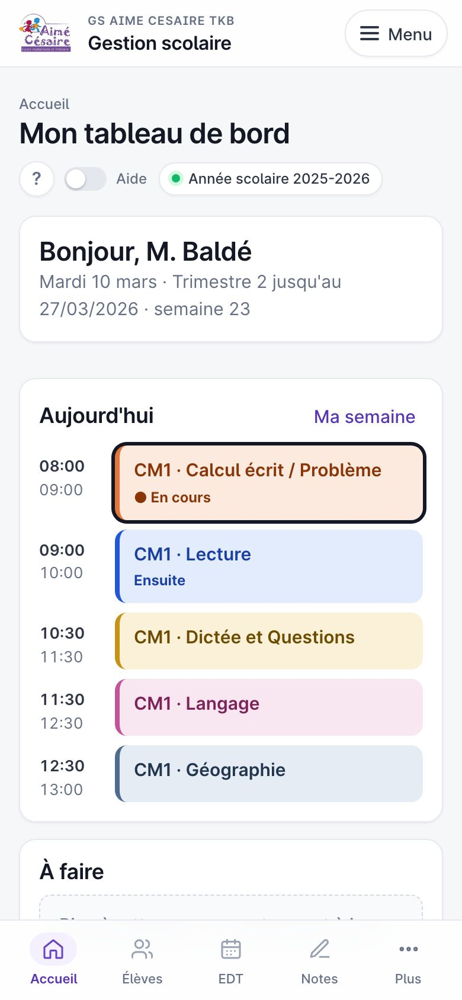

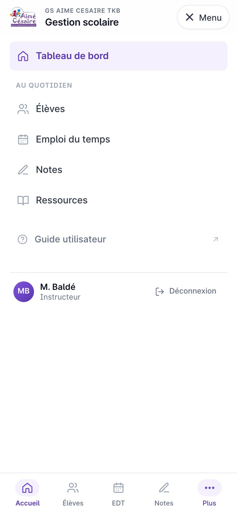

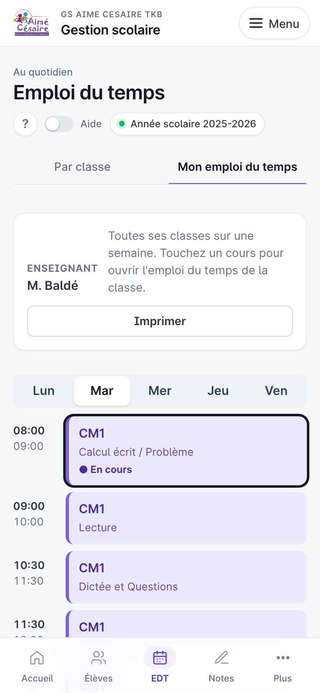
Démarrer l'année
L'ordre conseillé pour la direction, avant le premier jour de classe.
- Comptes : un compte par membre de l'équipe (Utilisateurs), mot de passe personnel remis à chacun.
- Classes : vérifier la liste et choisir l'instructeur principal de chaque classe (Classes).
- Matières : affectations, coefficients, enseignants et heures par classe (Matières).
- Emplois du temps : une semaine par classe (Emploi du temps).
- Périodes : trimestres et semestres avec leurs dates (Notes, onglet Périodes).
- Élèves : import Excel ou saisie, puis compléter les fiches signalées (Élèves).
- Paiements : enregistrer les inscriptions au fil de l'eau (Paiements).
- Ressources : déposer les programmes et les cours de la semaine (Ressources).
Le bloc « À faire » du tableau de bord signale ce qui manque encore.
Questions fréquentes
Je n'arrive pas à me connecter
Vérifiez l'identifiant (sans espace) et le mot de passe (attention aux majuscules). En cas d'oubli, la direction vous en donne un nouveau.
Je ne vois pas un menu
C'est normal : chaque rôle ne voit que ses écrans (voir Qui peut faire quoi).
Je ne peux pas saisir de note
La période est peut-être fermée (demandez à la direction), ou la matière n'est pas à votre nom dans l'écran Matières.
Un document ne s'ouvre pas
Si le navigateur bloque le nouvel onglet, un bandeau « Ouvrir le document » apparaît : touchez-le.
L'impression d'un bulletin est mal cadrée
Dans la fenêtre d'impression, choisissez le format A4, l'orientation portrait et l'échelle « Par défaut » (ou 100 %).
J'ai fait une erreur dans une fiche ou une note
Fiche : Modifier la fiche. Note : onglet Carnet de notes, touchez la note pour la corriger ou la supprimer.